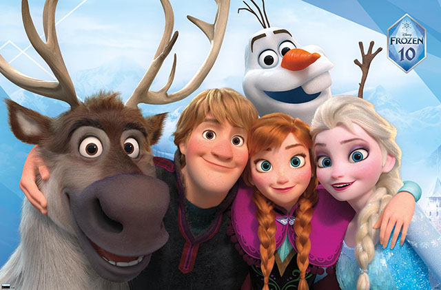

Elsa is a character created by Jennifer Lee back in 2012. She is one of the few famous Disney
characters,
along side with Mickey Mouse and Winnie the Pooh. Elsa is a queen in a fictional kingdom in Norway called
Arendelle, where she lives out her life looking after her people and being there for friends and
family.
While she is most famous for her ice magic, blue dress, and her braided white hair, her most reconizable
traits
is her character. Known for her being afraid of her own ice powers and longing to be free, she has inspierd
so
many people to break free from the expactations from other people and let themselves go, doing the things
they
are well known for.
Elsa's Personality and Habits
Elsa is best known for her fear, and her desier for freedom. Though, throughout the film, once she learns
that
love is the key of contolling her powers, rather than fear, she trasforms from a isolated, anxiety filled
ruler,
to a more self confident ruler. At her core, her true self is that of a resilient saviour. Nowadays, she
would
still govern her kingdom but also still be there for her sister Anna, along with all her other
friends as
well. She would also still descover more of her powers throughout her journy, finding new abilitys as she
grows.
Elsa's Friends and Family
throughout the Frozen franchies, Elsa's wouldn't been able to make it far in her journy if it wasent for her
sister, and the friends she made along the way. Anna is Elsa's sister, she is very loyal to her and
helps
her sister with strugles, or situations, that her sister is facing. Olaf is a living snowman, who is
Anna
and Elsa's childhood friend. They built him when they were kids and he serves as a protector for both Anna
and
Elsa's relationship, and a best friend of the group. Kristoff is a ice harvester, who harvest ice for
a
living. he is the male, love intrest of Anna, and he has a loyal companion named Sven, a raindeer who
is
always on Kristoff's side.

Quotes from Elsa
One quote from Elsa that is really admired by everyone is, and no suprise, 'Let It Go'. Yes, its from
a
song and many people have heard it so much, but that one line has a truth, and deeper meaning. During the
song,
Elsa transforms from a queen that has to be purfect, to a bird free from its cage. She built her ice palace
and
trasforms her dress into a new icy dress, and it actually shows that she is letting go and being who she is,
and
it supports that line 'let It Go'. Its not just a fancy line, its a truth that tells people to let that
uniqueness out and be who you are.